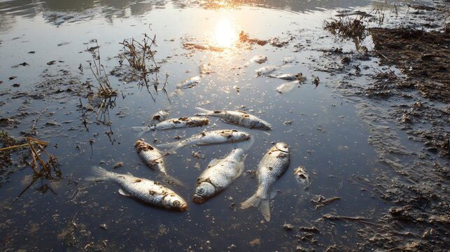

Warn farmers before the water turns, not after the fish do.
IoT-SeAFEST is a floating sensor hub that streams water quality to the cloud in real time, so aquaculture farms can act while there is still time to save their stock.

What is SeAFEST?
A real-time early warning system for water quality, built to protect food production.
IoT-SeAFEST is a custom-engineered, multi-sensor hub that floats on the water. It collects readings on its own, sends them wirelessly to the cloud, and shows them on a web and mobile dashboard.
The hub’s housing is 3D-printed in PETG, a tough plastic that resists moisture, so it holds up in extreme aquatic conditions and stays affordable to scale.
- Real-time, autonomous data collection
- Wireless transmission to the cloud
- Durable, scalable 3D-printed PETG housing
- A vital “window of time” to protect the farm

Why create SeAFEST?
Aquaculture is the fastest-growing way we produce food, yet it is still exposed to silent changes in the environment.
Reactive handling is a crisis
Conventional monitoring relies on visible symptoms. By the time fish show respiratory distress, the chance to intervene has already passed, and the result can be mass harvest loss.

Environmental shifts are silent
Poor water quality leads to disease outbreaks and high mortality, and these shifts stay invisible until the damage is done.

Traditional checks also depend on manual sampling and laboratory testing, which are slow and give no live data. SeAFEST replaces that delay with a continuous stream.
What do we expect SeAFEST can do?
Give farms the “vital window” they need: early, predictive warnings instead of reactions to visible damage.
How it compares with traditional monitoring
| Feature | Traditional monitoring | IoT-SeAFEST |
|---|---|---|
| Monitoring frequency | Manual, occasional | 24/7 real-time stream |
| Data analysis | Physical spreadsheets | Automated cloud analytics |
| Early warning | Reactive (visual signs) | Proactive (predictive alerts) |
| Intervention window | Limited to none | Extended critical window |
What impact does it give to the community?
Healthier farms mean steadier income for farmers and a more resilient food supply for everyone else.
Securing the bottom line
Prevent 54%+ of mass fish mortality and cut feed costs by up to 22%, protecting farmers’ livelihoods.
Shielding food supply
Steadier harvests protect regional food supply chains and the people who depend on them.
Data for compliance
Historical records give the transparency needed for environmental impact reports and regulatory support.
SDG 14: Life Below Water
Protects aquatic ecosystems from preventable toxic spikes and mortality events.
SDG 2: Zero Hunger
Supports a stable, resilient food production system for growing populations.
Built to last
PETG housing offers high moisture resistance. In lab tests it kept 95% of its tensile strength after 30 days in water, against 62% for PLA.
Block diagram
From the water to the farmer’s phone in four steps. Microsoft Azure and ThingsBoard give farmers instant visibility.
Edge
On the water- Sensor suite: humidity, turbidity, water temperature, gas, pressure, light
- ESP32 controller requests and collects each reading
Network
Over the internet- Controller sends data by REST API over HTTP
Cloud
Hosted on Microsoft Azure- ThingsBoard server
- Database stores every reading
User
In the farmer’s hands- Web interface
- Mobile dashboards
Prototype
A working floating hub, tested in a tank and streaming to a live dashboard.
Built for the water
The housing began in PLA, but PLA deformed within two weeks of submersion and lost up to 30% of its structural strength. The final PETG housing showed no leakage or cracking and kept sensors aligned and accurate for over a month in aquarium tests.
The ESP32 controller was chosen over a Raspberry Pi for its lower cost, smaller size, low power use and built-in WiFi, which suits compact, remote hubs.
Integrated sensor suite

Ambient humidity
Moisture in the air, for understanding evaporation and humidity balance.

Turbidity
Water clarity and particle load, a sign of contaminants and overall quality.

Water temperature
Direct-contact reading, essential for fish health.

Ambient Temperature
the actual temperature of the air surrounding a specific object, device, or environment.

Gas
VOC and gas levels that affect atmospheric conditions above the water.

Pressure
Atmospheric pressure, which helps predict weather changes.

System & Field Showcase
Explore the engineering, cloud telemetry, and real-world deployment stages of IoT-SeAFEST.
3D-Printed PETG Floating Hub
Engineered to endure harsh tropical aquaculture environments, retaining 95% tensile strength after 30 days submerged while keeping multi-depth sensor probes stable.
Real-Time ThingsBoard Dashboard
Hosted on Microsoft Azure, streaming 24/7 readings for water temperature, turbidity, gas, humidity, barometric pressure, and ambient light directly to farmers' devices.
View Live TelemetryBrackish & Marine Cage Readiness
Designed for clustered cage operations in Penang and the northern Straits, providing early alerts before invisible dissolved-oxygen or thermal shifts harm stock.
Eliminating Reactive Losses
Moving farmers from post-distress damage control to proactive management—preventing over 54% of predictable fish mortality events and reducing feed waste by up to 22%.
Commercial potential
Who uses it, who pays and where we start.
Who uses it
The farm operator or technician who checks cages or ponds every day.
Who buys it
The farm owner, a cooperative, or an agency programme that supports farmers.
Where we start
Marine and brackish cage farms in Penang and the northern Straits, where stock cannot be moved quickly and sites are clustered.
Market opportunity in Malaysia
Business model
| Revenue | What it covers | Price (proposed) |
|---|---|---|
| Hardware | Floating sensor hub | RM 1,500 |
| Installation | Site visit, mooring, setup | RM 300 one-off |
| Monitoring plan | Dashboard, alerts, data link, cleaning and calibration visits | RM 99 a month |
Each unit is worth about RM 1,688 a year: RM 1,188 for the plan plus RM 1,500 of hardware spread over 3 years.
Its potential
The 24-month roadmap takes SeAFEST from bench tests to paying farms.
Bench validation
Calibrate every sensor against reference instruments.
Farm pilots
5–10 cage sites with phone alerts and a solar, cellular hub.
Add sensing
Dissolved oxygen and pH probes.
Paid plans
Convert pilot farms and target 25 paid hubs.
Success test: at least 40% of pilot farms agree to pay. Before that, we will run 20+ structured farmer interviews to confirm the problem, who pays, and whether RM 99 a month is acceptable.
What we need next
5–10 pilot cage sites
Farms that let us place the hub at their cages, so we can measure uptime and how useful the alerts are.
2 collaborators
A fisheries laboratory to check sensor accuracy, and a farm-service partner to help install and support.
RM 210k seed funding
A provisional 24-month budget for pilot hubs, field work, extra sensors and testing.
Collaborators and honorary credits
IoT-SeAFEST is the work of researchers and partners who share one goal: protecting food production and aquatic life.
Academic Lead
-
 Ts. Dr. Ahmad Anwar Zainuddin Kulliyyah of Information and Communication Technology (KICT), International Islamic University Malaysia
Ts. Dr. Ahmad Anwar Zainuddin Kulliyyah of Information and Communication Technology (KICT), International Islamic University Malaysia
Project Team
-
Nadhirah Fitri Binti Mohd Rozaidi Project Team Member • KICT, IIUM
-
Nur Insyirah Farahhani Binti Malek Project Team Member • KICT, IIUM
-
 Ahmad Mukhlis Bin Zakariah Project Team Member • KICT, IIUM
Ahmad Mukhlis Bin Zakariah Project Team Member • KICT, IIUM -
 Muhammad Nabil Zihni Bin Omar Shukri Project Team Member • KICT, IIUM
Muhammad Nabil Zihni Bin Omar Shukri Project Team Member • KICT, IIUM
Research Collaborators
-
Dr. Amir ‘Aatieff Amir Hussin KICT, IIUM
-
Nik Nor Muhammad Saifudin Nik Mohd Kamal KICT, IIUM
-
Muhammad Irfan Zaki Mohd Razali KICT, IIUM
-
Normawaty Mohammad-Noor Institute of Oceanography and Maritime Studies (INOCEM), Kulliyyah of Science, IIUM
-
Roziawati Mohd Razali Institut Penyelidikan Perikanan (FRI) Malaysia
-
Mohd Nor Azman Ayub Institut Penyelidikan Perikanan (FRI) Malaysia
-
Muhd Farouk Harman Institut Penyelidikan Perikanan (FRI) Malaysia
Institutions & Honorary
International Islamic University Malaysia
Kulliyyah of ICT (KICT) and Kulliyyah of Science
Institut Penyelidikan Perikanan (FRI) Malaysia
Bayan Lepas, Penang
Ministry of Higher Education Malaysia
Fundamental Research Grant Scheme (FRGS), Grant No. FRGS24-327-0936